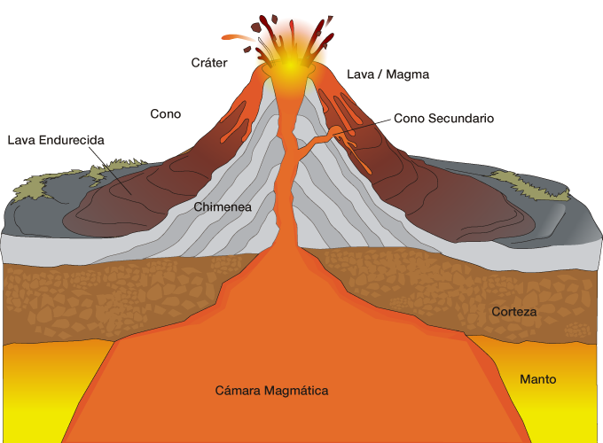

Los volcanes son fénomenos tan excepcionales porque no solo su apariencia es imponente, si no que tambien presenta úncia. Aquí un diagrama con sus principales partes:

Mira el Diagrama
- Materiales Resultantes: Las coladas, domos, diques y cenizas, que son diferentes formas de material volcánico que se solidifica al enfriarse.
- Las Fisuras: Son grietas en la superficie por donde también puede salir el magma.
- La Caldera: Es una depresión circular que se forma cuando el cráter se hunde o colapsa.
- El Crácter: Es la abertura en la cima del cono volcánico por donde sale el magma.
- El cono volcánico: es la estructura formada por la acumulación de material sólido y líquido expulsado por el volcán.
- La Chimenea: Es el conducto por donde sale el magma hacia la superficie
- Cámara Magmática Es el depósito subterráneo de magma, la roca fundida que proviene del interior de la Tierra.